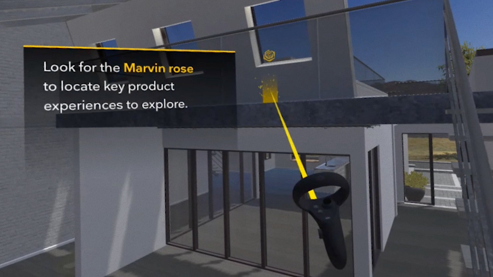
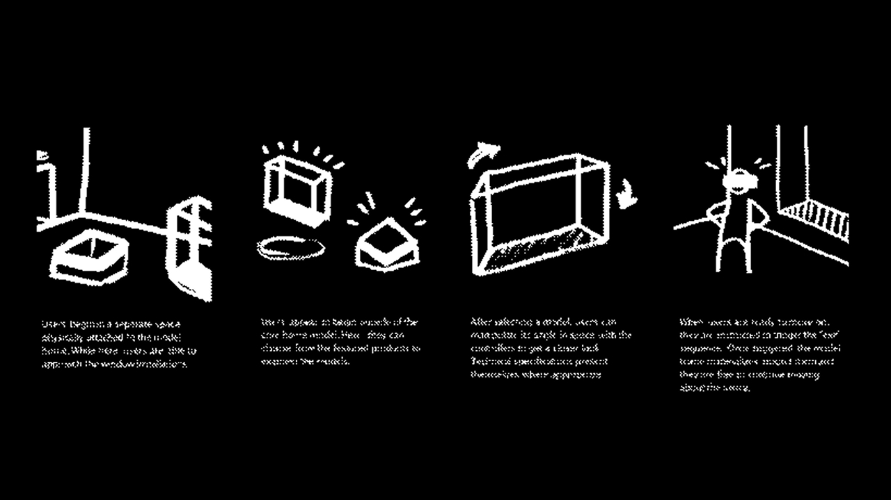
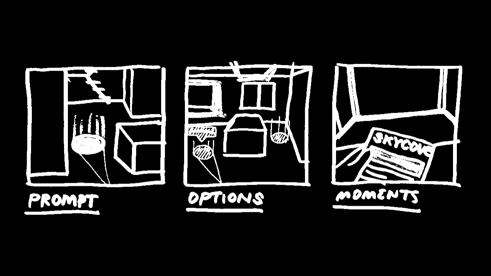
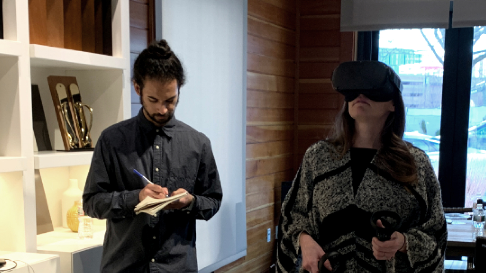
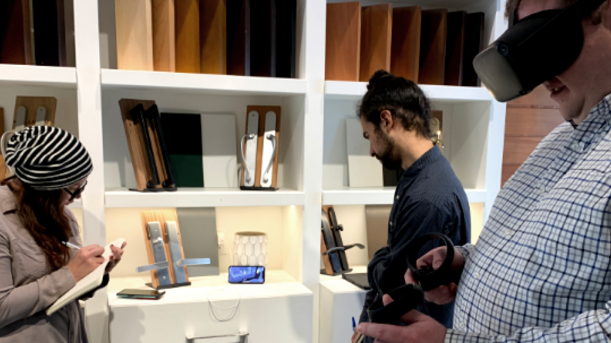
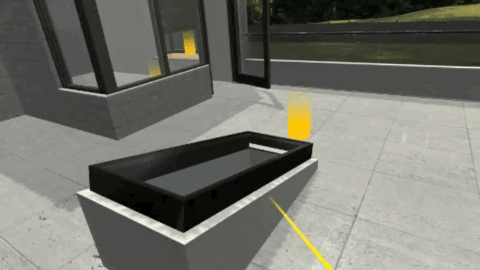
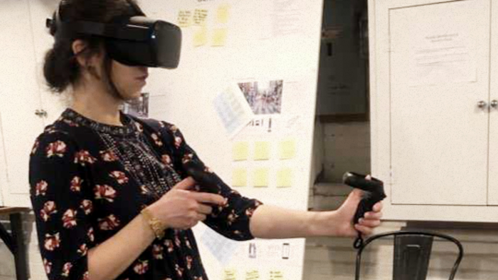
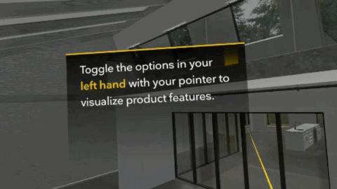
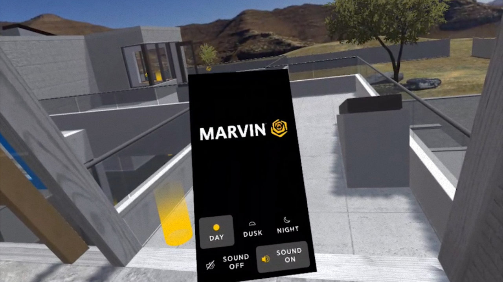

Drive awareness of Marvin’s two new window products through firsthand experience.
Limited availability of physical installations for prospective customers to visit in-person.
Develop a VR experience to demonstrate products to architects and homeowners.
As UX Lead, I worked closely with INPHANTRY's Tech Lead to facilitate the discovery of Marvin windows in a virtual environment. We crafted the experience from the moment architects are handed a headset. From donning the Oculus to traversing the model home, we established confidence through clear guidance.
Our schedule allowed six weeks for production. We dedicated time to furnishing the digital space, implementing an onboarding flow, and defining and testing the UI. Production commenced with a kickoff between INPHANTRY and IDEO, whose initial research and development created the prototype.
We began by storyboarding a first-time user journey that would ground users in (virtual) reality. Sketching led us to a flow that immediately placed architects in the context of an architectural project. With a working prototype, we were ready to put controllers in the hands of users.
 I composed the script for weekly usability tests carried out at a local Marvin showroom. While on site, I facilitated the architect's experience and delegated roles to teammates for data capture.
Conducting weekly testing sessions tuned us in to how practicing architects respond to products in situ. I was responsible for synthesizing insights, summarizing progress on the prototype, and owning client presentations throughout the week.
 The standalone Oculus Quest headset was chosen to carry the experience. Its lightweight silhouette, untethered by cables and sensors found in competing hardware, proved to be a perfect match for this task. Harnessing the power of easily deployable VR kits, Marvin’s new products can be experienced in context, without time consuming trips to view physical installations.
 Architects are brought face-to-face with product models instantaneously. The time commitment of showroom travel is unraveled, leading to faster sales and polished projects.
In-person training at Marvin headquarters was scheduled to conclude the project. Training sessions were cut due to the onset of the COVID-19 pandemic.
Abby Carlson, Kilo Thomas, Em Montoya, Dan Roeger, Kevin Lee, and many others.
This was my first opportunity to own and run a usability study. Shout out to Just Enough Research by Erika Hall for providing a working blueprint. I gained some insight into testing etiquette and applied that to interview people wearing a VR headset.
Testing in this space introduced plenty of unique variables. Differences in height, comfort with virtual reality, and whether or not participants wore glasses influenced their experience. These nuances in test participants’ interactions left me craving more time to reflect after the fact.
I’m proud of how the team mobilized to gather data in the field. We did all we could with an 8-foot-by-8-foot space and an iPhone screen to observe a live stream. In an ideal world we cast the headset feed to a larger screen!
Our timeline worked in a full day of testing followed by a client presentation the next afternoon. The evening of the tests and the morning of the presentation were our platforms for analysis. Budgeting time to properly investigate findings is key to gathering data.
I was grateful for the days an Architecture Project Manager was on site to answer questions about technical details. Since our team was not versed on the products, having an expert on hand helped create a familiar environment for architects. This gave our team a peek at how the two might interact during a scheduled visit.
Without participation in field studies, our understanding of the showroom visit was secondhand. Luckily, we received study reports from IDEO alongside the working prototype. Reading up on documented strengths and struggles highlighted how indispensable a role research plays.
Client expectations and a search for genuine reactions can pose a challenge to juggle. It’s important to witness the friction points of a developing experience. I can’t assume our initial decisions provide the most value. On the other hand, it’s good to keep in mind that seeing a potential client struggle isn’t ultimately the impression you want to leave as a Brand.